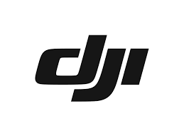
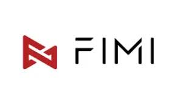
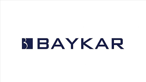

Havada insansız uçabilen tüm araçlara drone olarak adlandırabiliriz. Dronlar, uzaktan kumanda ile kontrol edilebilen, komut verilebilen, video ve görüntü kaydı yapabilen insansız hava araçlarıdır. Bir drone, pervane, motor, gövde ve uçuş kontrol kartı gibi bileşenlerin bir araya gelmesinden oluşur. Dronlar motor sayılarına göre adlandırılır. Tricopter, Quadcopter, Hexacopter, Octocopter olarak drone çeşitlerini sayabiliriz. Quadcopter en çok kullanılan model olup Drone eşittir Quadcopter olarak anılmaktadır.
Bilinenin aksine drone ve helikopter ayrı şeylerdir. Helikopter ile drone kullanım alanları çok farklıdır.
Drone üreten firmalar; Dronları ağırlığı azaltmak ve manevra kabiliyetini artırmak için hafif kompozit malzemelerden yapmaktadır.
Drone üreten firmalar üç’e ayrılır Drone için hem yazılım üreten hem de drone üreten firmalar, Drone gövdesi tasarımı yapıp plastik ve metal parçaları üreten firmalar ve sadece drone yazılımı üreten firmalar.
Hem yazılım üreten hem de drone firmalar arasında en büyüğü şüphesiz DJI firmasıdır. Ardından Fimi, Hubsan Autel Robotics, SKYDİO gibi firmalar gelmektedir.
 
Drone için Drone gövdesi tasarımı yapıp plastik ve metal parçaları üreten firmalar; birçok ülkenin savunma firmaları drone tasarımlarını ve parçalarını üretip yazılımı büyük drone firmalarından satın almaktadır
Türkiye’deBir Makine İmalat ve Savunma şirketi olan Baykar Savunma en büyük drone üretim
firmalarından
biridir.

Ayrıca Amatör hobi amaçlı drone satışı yapan Hubsan Teknoloji A.Ş. Ankara Ostim Organize Sanayi
bölgesinde drone tasarımı yapıp tüm drone yedek parça ve aksesuarlarını kendisi üretmektedir. Suan
tüm
pazar yerlerinde en çok satan drone modelleri olan Aden E58 ve Aden E58 Pro drone modelleri Ankara
Ostim’de üretilmektedir. Amerika ve Çin destekli Hubsan Teknoloji A.Ş. 5 yıl gibi kısa bir sürede
Türkiye drone piyasasına girmiş ve İlk yerli hobi dronu yapan firma olmuştur.
Bizim yapacağımız araç (drone) hobi amaçlı yapılan araçlardan tek farkı çok profesyonel bi iş olmamasıdır. Elimizdeki imkanların sunduğu ve kendi çapımızda profesyonel bir araçtır.
Bu projenin konusuda belli olduğu üzere drone. Daha doğrusu 'Nasıl drone yapılır?' sorusuna bir cevap olabilir.